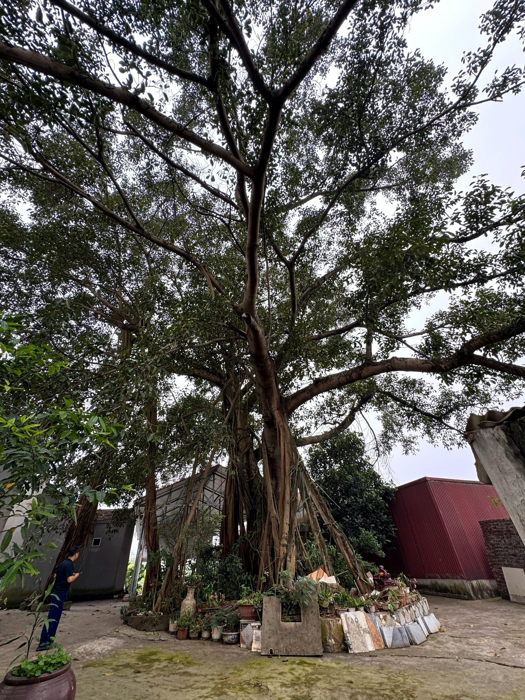
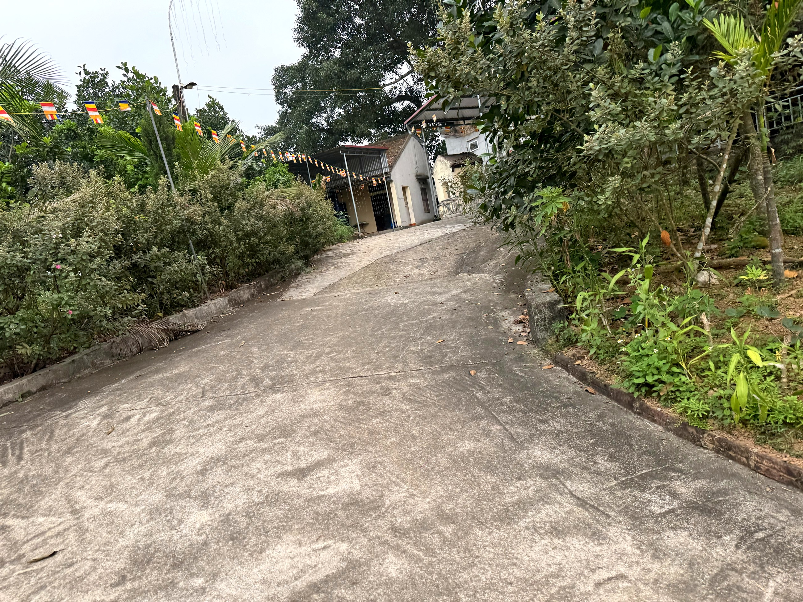

Loại hìnhTypeType
Di tích tâm linhSpiritual Heritage SitesSites de Patrimoine Spirituel

Chùa Phú Cốc tọa lạc trên ngọn đồi lộng gió thuộc thôn Đồi Dùng, xã Mỹ Đức — điểm tựa tâm linh vững chãi của người dân 6 thôn vùng Phú Cốc qua nhiều thế hệ. Theo lối dẫn lên chùa, không gian chuyển dần từ ồn ào của đời thường sang sự tĩnh lặng, thanh khiết của non cao.
Tâm điểm khuôn viên tự viện là cây đa cổ thụ hơn 400 năm tuổi, tán xòe rộng che chở cho ngôi chùa qua bao thăng trầm. Cụm kiến trúc tâm linh được quy hoạch hài hòa, tôn nghiêm, gồm: tam bảo, nhà mẫu, nhà thờ tổ, miếu thờ quan lang và nhà khách. Từ trên đồi, du khách có tầm nhìn khoáng đạt bao quát cánh đồng và dãy núi đá vôi phía xa — cảnh quan đặc trưng của vùng bán sơn địa Mỹ Đức.
Chùa Phú Cốc is nestled on a windy hill in thôn Đồi Dùng, Mỹ Đức commune — a steadfast spiritual anchor for the people of 6 Phú Cốc villages across generations. As you ascend to the pagoda, the atmosphere gradually shifts from the bustle of daily life to the serene, pure tranquility of the highlands.
At the heart of the monastery grounds stands an ancient banyan tree, over 400 years old, its wide canopy sheltering the pagoda through countless ups and downs. The spiritual architectural complex is harmoniously and solemnly planned, including: the main sanctuary (tam bảo), Mother Goddess temple, ancestral hall, Quan Lang shrine, and guesthouse. From the hill, visitors enjoy expansive views encompassing the rice fields and distant limestone mountains — a characteristic landscape of the semi-mountainous My Duc region.
Chùa Phú Cốc est nichée sur une colline venteuse à thôn Đồi Dùng, commune de Mỹ Đức — un pilier spirituel inébranlable pour les habitants des 6 villages de Phú Cốc à travers les générations. En montant vers la pagode, l'atmosphère passe progressivement de l'agitation de la vie quotidienne à la tranquillité sereine et pure des hautes terres.
Au cœur du monastère se dresse un banian ancestral de plus de 400 ans, dont la large canopée a abrité la pagode à travers d'innombrables péripéties. Le complexe architectural spirituel est harmonieusement et solennellement aménagé, comprenant : le sanctuaire principal (tam bảo), le temple de la Déesse Mère, le hall ancestral, le sanctuaire de Quan Lang et la maison d'hôtes. Depuis la colline, les visiteurs profitent d'une vue imprenable sur les rizières et les lointaines montagnes calcaires — un paysage caractéristique de la région semi-montagneuse de My Duc.
| Tham quan, chiêm báiVisit and offer prayers.Visite et recueillement. | Tự do vãng cảnh, dâng hương theo nghi lễFreely explore the scenery and offer incense ritually.Explorez librement le paysage et offrez de l'encens selon les rites. |
| Hướng dẫn tại chỗLocal GuidesGuides Locaux | Giới thiệu kiến trúc, lịch sử, tín ngưỡng qua hướng dẫn viên cộng đồngDiscover architecture, history, and beliefs through a community guide.Découvrez l'architecture, l'histoire et les croyances avec un guide communautaire. |
| Chụp ảnh cảnh quanCapture Scenic LandscapesImmortalisez nos paysages | Cây đa cổ thụ, không gian chùa và tầm nhìn đồi núiAncient banyan tree, temple grounds, and mountain viewsBanian ancien, espace du temple et vue sur les collines et les montagnes |
| Nghe kể chuyện dân gianListen to captivating folk talesÉcoutez des contes populaires captivants | Tích truyện cây đa, quan lang và người Mường Phú CốcHear the timeless legend of the banyan tree, the Quan Lang, and the Muong people of Phu Coc.Écoutez la légende intemporelle du banian, du Quan Lang et du peuple Muong de Phu Coc. |
| Nghỉ chân, thư giãnRelaxation StopPause détente | Nhà khách trong khuôn viên chùaGuesthouse within the pagoda grounds.Maison d'hôtes dans l'enceinte de la pagode. |


Chùa Phú Cốc hướng tới trở thành điểm tâm linh — cảnh quan kết hợp trong tuyến du lịch cộng đồng Mường Cốc, gắn với hành trình khám phá đồi Đồi Dùng và Hồ Bai Bó. Trong giai đoạn tiếp theo, điểm đến sẽ bổ sung các hoạt động tìm hiểu tín ngưỡng dân gian người Mường, phát triển đội ngũ hướng dẫn viên cộng đồng am hiểu văn hóa bản địa, và gắn kết với các hộ homestay — farmstay lân cận để tạo trải nghiệm trọn vẹn. Điểm đến Du lịch cộng đồng Mường Cốc, Xã Mỹ Đức – Thành phố Hà NộiChùa Phú Cốc aims to become a combined spiritual and scenic destination on the Mường Cốc community tourism route, linked to the discovery journey of Đồi Dùng hill and Baibóo Lake. In the next phase, the destination will add activities to explore Mường folk beliefs, develop a team of community guides knowledgeable in local culture, and connect with nearby homestays and farmstays to create a comprehensive experience. A Mường Cốc Community Tourism Destination, My Duc Commune – Hanoi City.Chùa Phú Cốc vise à devenir un point spirituel et paysager combiné sur l'itinéraire de tourisme communautaire de Mường Cốc, lié au parcours de découverte de la colline Đồi Dùng et du lac Baibóo. Dans la prochaine phase, la destination ajoutera des activités pour explorer les croyances populaires Mường, développera une équipe de guides communautaires connaissant la culture locale, et se connectera aux homestays et farmstays voisins pour créer une expérience complète. Une destination de tourisme communautaire de Mường Cốc, commune de My Duc – ville de Hanoi.